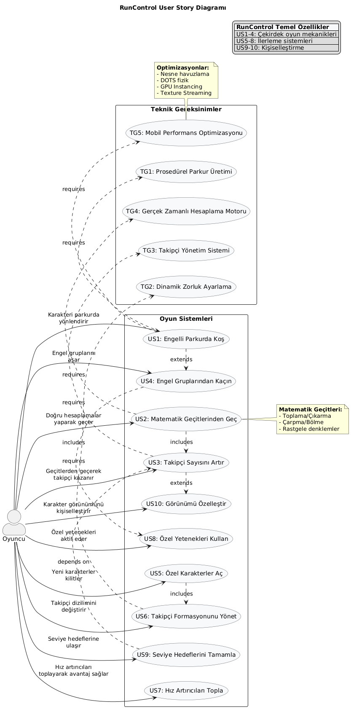
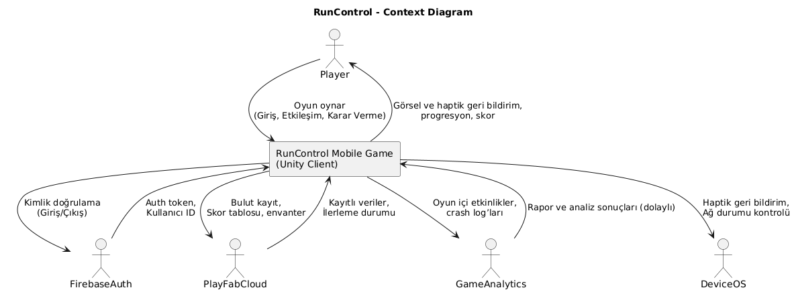
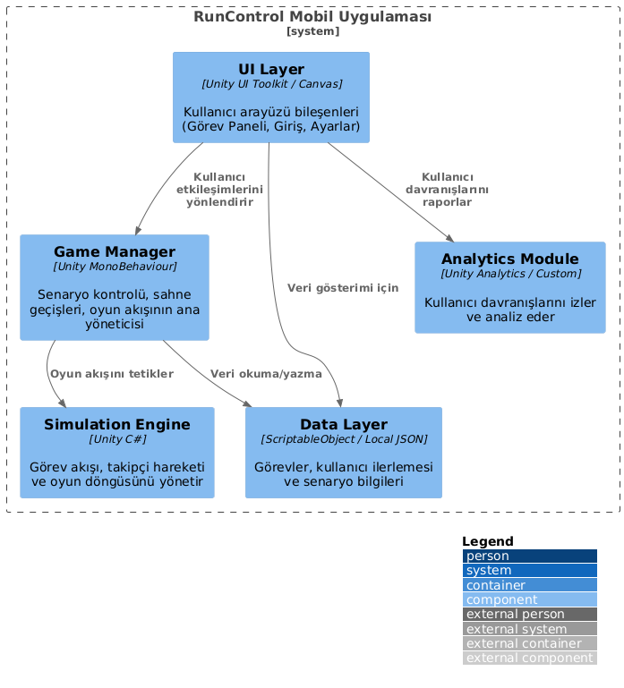

1. Giriş ve Hedefler
RunControl, mobil platformlar için geliştirilen yenilikçi bir hyper-casual koşu oyunudur. Oyun, geleneksel runner mekaniklerini matematiksel bulmacalarla birleştirerek benzersiz bir deneyim sunmayı amaçlar. Oyuncular, engellerle dolu dinamik parkurlarda ilerlerken karşılarına çıkan matematiksel geçitleri doğru çözerek takipçi sayılarını artırır ve zorlu parkurları aşmaya çalışır. Bu yapısıyla RunControl, sadece eğlence değil aynı zamanda temel matematik becerilerini geliştirme fırsatı sunan eğitsel bir araç olarak da öne çıkar.
Projenin temel hedefi, oyunculara hızlı karar verme ve stratejik düşünme becerilerini geliştirebilecekleri eğlenceli bir platform sunmaktır. Klasik runner oyunlarından farklı olarak matematiksel öğeler içeren bu yapı, özellikle genç yaştaki oyuncuların bilişsel becerilerini desteklerken aynı zamanda onlara keyifli vakit geçirme imkanı tanır. Oyun içindeki progresyon sistemi, oyuncuların başarı hissini artırmak üzere tasarlanmıştır; her geçitten başarıyla geçiş, takipçi sayısını artırarak oyuncuya somut bir ilerleme hissi verir.
RunControl'un teknik hedefleri arasında düşük seviyeli cihazlarda bile sorunsuz çalışan optimize edilmiş bir performans sunmak ve kullanıcı dostu bir arayüzle erişilebilir bir deneyim yaratmak yer alır. Oyun, minimalist tasarımı ve sezgisel kontrolleri sayesinde geniş bir kitleye hitap ederken, arka planda çalışan gelişmiş algoritmalarla matematiksel hesaplamaları anında işleyerek akıcı bir oyun deneyimi vaat eder.
1.1. Gereksinimlere Genel Bakış
RunControl oyununda tüm kullanıcılar şu temel işlevlere erişebilecek:
- Dinamik Parkur Mekaniği: Oyuncular, rastgele oluşturulan engelli parkurlarda koşu yaparken aynı zamanda matematiksel geçitlerle karşılaşacak ve bu geçitleri doğru çözerek takipçi sayılarını artırabilecek.
- Takipçi Yönetimi: Başarılı geçit çözümleri sonucunda artan takipçi grubu, oyuncunun parkurdaki performansını doğrudan etkileyecek. Takipçi sayısı arttıkça engel aşma ve hız kazanma gibi avantajlar elde edilebilecek.
- Kişiselleştirilebilir Karakterler: Oyuncular, oyun içi kazanımlar veya küçük ödemelerle karakterlerinin görünümünü özelleştirebilecek ve özel yetenekler açabilecek.
- Eğitsel İçerik: Matematiksel geçitler, oyuncuların yaş seviyelerine uygun olarak farklı zorluk derecelerinde (toplama/çıkarma temel seviye, çarpma/bölme ileri seviye gibi) sunulacak.
Projenin İlerleyen Aşamalarında:
- Zorluk Seviyeleri: Oyuncuların matematiksel becerilerine göre otomatik ayarlanan adaptif zorluk sistemi eklenecek.
- Özel Etkinlik Modları: Limitli süreli özel seviyeler ve sezonluk etkinliklerle oyun çeşitliliği artırılacak.

1.2. Kalite Hedefleri
RunControl'un teknik mimarisi ve kullanıcı deneyimi, ISO/IEC 25010 standartlarına uygun şekilde belirlenen üç temel kalite hedefi üzerine inşa edilmiştir. Bu hedefler, oyunun başarısını doğrudan etkileyen kritik faktörleri kapsamaktadır:
- Kullanılabilirlik (Usability): RunControl, hyper-casual oyun kategorisinin beklentilerini karşılayacak şekilde sezgisel ve erişilebilir bir deneyim sunmayı hedefler. Oyun mekanikleri, 3 saniye kuralına uygun olarak anında öğrenilebilir tasarlanmıştır. Minimalist arayüz, yaş gruplarına özel renk paletleri ve haptik geri bildirimlerle kullanıcı memnuniyeti artırılır. Özellikle matematiksel geçitlerdeki görsel ipuçları, oyuncuların hızlı karar vermesini kolaylaştırır.
- Performans (Performance): RunControl, tüm kullanıcılar için kesintisiz ve akıcı bir deneyim sunmayı temel performans hedefi olarak belirlemiştir. Oyun, düşük seviyeli mobil cihazlarda (1GB RAM) bile sabit 60 FPS performansı garanti edecek şekilde optimize edilmiştir. Bu performans, özellikle yoğun takipçi simülasyonları sırasında kritik önem taşır; DOTS tabanlı fizik motoru sayesinde 100'den fazla takipçinin aynı anda simüle edildiği sahnelerde bile gecikmesiz bir deneyim sunulur. Oyunun yükleme süreleri, Unity'nin Addressable Assets sistemi kullanılarak 2 saniyenin altında tutulmuştur. Bu sayede kullanıcılar seviyeler arasında kesinti yaşamadan hızlı geçiş yapabilir. Bellek yönetimi konusunda object pooling ve texture streaming teknikleri kullanılarak RAM tüketimi 150MB'ın altında tutulur, bu da uzun oyun seanslarında bile cihazların aşırı ısınmasını ve performans düşüşlerini engeller.
- Güvenilirlik (Reliability): RunControl, kullanıcıların oyun deneyimini kesintiye uğratmayacak güvenilir bir altyapı sunar. Firebase Crashlytics entegrasyonu ile %99.9 çökmesiz oturum hedeflenir ve gerçek zamanlı hata takibi yapılır. Kullanıcı ilerlemesinin güvenliği, PlayFab bulut kayıt sistemi ile sağlanır; bu sayede cihaz değişikliklerinde veya beklenmedik kapanmalarda bile veri kaybı yaşanmaz. Oyun, ağ bağlantısının olmadığı durumlarda bile temel oyun döngüsünü çalıştırabilecek şekilde tasarlanmıştır. Kullanıcılar offline modda oyun oynamaya devam edebilir ve bağlantı yeniden sağlandığında ilerlemeleri otomatik olarak senkronize edilir. Ayrıca, yanlış matematiksel işlemlerde "Geri Al" butonu ile kullanıcıların hatalarını düzeltme imkanı sunulur. Adaptive difficulty sistemi sayesinde oyun, kullanıcının beceri seviyesine göre zorluğu dinamik olarak ayarlayarak hem yeni başlayanlar hem de ileri seviye oyuncular için dengeli bir deneyim sunar.
1.3. Paydaşlar
Aşağıdaki tabloda projede yer alacak paydaşlar yer almaktadır.
| Rol | İsim | Beklentiler |
|---|---|---|
Unity Geliştiricisi |
Batuhan BAYIR |
Temel oynanış programlaması, mimari tasarım, performans optimizasyonu ve teknik liderlik. |
Unity Geliştiricisi |
Mustafa TORTUK |
Arayüz sistemi uygulaması, giriş kontrolü ve para kazanma entegrasyonu. |
Oyun Tasarımcısı |
Enes GÜZEL |
Bölüm tasarımı, ilerleme sistemleri, matematiksel geçiş mekaniği ve oyuncu deneyimi dengesi. |
3D Sanatçı |
Mehmet Ali KODAŞ |
Karakter modelleme, çevre varlıkları ve koşucu oyun için görsel efekt (VFX) oluşturma. |
Ses Tasarımcısı |
Ahmet Utku KARAGÜLLE |
Ses efektleri oluşturma, arka plan müziği besteleme ve Unity’de ses entegrasyonu. |
| Akademik Mentor | Prof. Dr. FATİH ÖZKAYNAK | Projenin ilerleyişini kontrol etmek, kalite standartlarını gözetmek, projenin eğitim hedefleri ile uyumunu sağlamak. |
2. Mimari Kısıtlamalar
| Kısıtlama | Açıklama |
|---|---|
Platform Uyumluluğu |
Oyun, Unity 2022 LTS kullanılarak geliştirilecek ve minimum Android 8.0 (API 26) ile iOS 12+ cihazlarda native performansla çalışacaktır. IL2CPP scripting backend kullanılacaktır. |
Veri Yönetimi |
Oyuncu progres verileri (skorlar, kilitlemeler) PlayFab Cloud Save ile şifrelenecek, lokal önbellek için SQLite kullanılacaktır. Addressable Assets ile dinamik içerik yönetimi sağlanacaktır. |
Performans Hedefleri |
Low-end cihazlarda (1GB RAM) 60 FPS hedeflenmektedir. DOTS Physics ve SRP Batcher kullanılarak 100+ karakterli sahneler optimize edilecektir. APK boyutu 50MB altında tutulacaktır. |
Input Sistemi |
Unity's New Input System ile çapraz platform kontrol desteği (Dokunmatik/Gamepad) sağlanacak, input lag 80ms altında tutulacaktır. Mobil cihazlarda tilt kontrol opsiyonu bulunacaktır. |
Test Stratejisi |
Unity Test Framework ile unit testler, UAT için Firebase Test Lab kullanılacaktır. Her feature branch için Android/iOS build otomasyonu kurulacaktır (CI/CD). |
Sürüm Takvimi |
2 haftalık sprintler halinde geliştirme yapılacak, her sprint sonunda Alpha/Beta build'ler TestFlight/Google Play Beta'ya dağıtılacaktır. Final lansman öncesi 2 haftalık soft-launch dönemi olacaktır. |
3. Sistem Kapsamı ve Bağlamı
RunControl, mobil platformlar için geliştirilen hyper-casual tarzda, matematik tabanlı bir koşu oyunudur. Uygulamanın sistem kapsamı, oyuncuya sade ve sezgisel bir arayüz üzerinden dinamik, matematiksel kararlar gerektiren bir oyun deneyimi sunmayı hedefler. Uygulama, düşük donanımlı cihazlarda dahi yüksek performansla çalışacak şekilde optimize edilmiştir. Sistem; oyun döngüsünü oluşturan temel mekanikler, kullanıcı progresyonu, veri senkronizasyonu ve kişiselleştirme özellikleri etrafında şekillenir.
- Dinamik Parkur ve Oyun Döngüsü: Oyuncular, procedural olarak oluşturulmuş parkurlarda koşarken matematiksel geçitlerle karşılaşırlar. Bu geçitler, toplama, çıkarma, çarpma ve bölme gibi işlemler içerir ve doğru cevaplar oyuncunun takipçi sayısını artırır. Yanlış cevaplar ise takipçi kaybına veya yavaşlamaya neden olur.
- Takipçi Sistemi: Oyuncunun parkur üzerindeki başarısı, sahip olduğu takipçi sayısı ile doğrudan ilişkilidir. Takipçiler, engelleri aşmak, hızlanmak ya da alternatif rotalara yönelmek gibi avantajlar sağlar. Bu sistem, oyuna stratejik bir derinlik kazandırır.
- Kişiselleştirme ve Karakter Gelişimi: Oyuncular, oyun içi başarılar veya mikro ödemeler yoluyla karakterlerinin görünümünü değiştirebilir ve özel yetenekler açabilir. Karakter kostümleri, efektler ve animasyonlar Unity Animator Controller ve Addressable Asset yapısı üzerinden dinamik şekilde yönetilir.
- Adaptif Zorluk ve Eğitsel İçerik: Oyundaki zorluk seviyesi, oyuncunun performans verilerine göre gerçek zamanlı olarak ayarlanır. Bu sayede hem yeni başlayanlar hem de deneyimli oyuncular için sürekli dengeli ve motive edici bir deneyim sunulur. Matematiksel geçitler yaş seviyelerine göre farklı kombinasyonlarla oluşturulur ve arka planda çalışan bir soru jeneratörü algoritması tarafından dinamik olarak üretilir. Etkinlik ve Sezon Sistemleri: RunControl, belirli zaman aralıklarında sunulan özel temalı parkurlar ve sezonluk görevlerle sürekli güncel ve dinamik kalır. Bu sistem, kullanıcı sadakatini artırırken oyuna uzun vadeli bağlılık sağlar.
Genel olarak RunControl’un sistem kapsamı, kullanıcı dostu bir hyper-casual oyun deneyimiyle birlikte eğitsel içerik sunmayı ve performans-odaklı, sürdürülebilir bir mobil oyun mimarisi oluşturmayı hedeflemektedir. Unity’nin C# dili, DOTS (Data-Oriented Tech Stack), Addressables, Animator Controller ve Firebase gibi modern araç setleri ile geliştirilen bu yapı, günümüz mobil oyun ihtiyaçlarına tam uyum sağlar.

4. Çözüm Stratejisi
RunControl sistem mimarisini şekillendiren temel kararların ve çözüm stratejilerinin kısa bir özeti aşağıda sunulmuştur:
-
Mobil Uygulama Geliştirme: Unity Engine kullanılarak, hem Android hem de iOS platformları için yüksek performanslı, görsel olarak zengin bir deneyim sunulmaktadır.
-
Veri Saklama ve Yönetimi: Oyuncu verileri için Firebase Realtime Database ve yerel cache (PlayerPrefs) kombinasyonu tercih edilmiştir. Bu sayede çevrimdışı ve çevrimiçi senaryolar birlikte desteklenir.
-
Kimlik Doğrulama ve Hesap Yönetimi: Firebase Authentication ile kolay ve güvenli oturum yönetimi sağlanmaktadır.
-
Oyun İçi Ekonomi ve Sıralama: PlayFab altyapısı kullanılarak oyuncu sıralamaları, ödüller ve dijital mağaza yönetilmektedir.
-
Hata Takibi ve Analiz: Unity Analytics ve Firebase Crashlytics ile kullanıcı davranışı ve olası hatalar detaylı şekilde izlenmektedir.
Unity Tabanlı Modüler Mimari: Sistem, takipçi simülasyonu, matematik motoru ve kullanıcı arayüzü gibi bileşenler arasında açık sorumluluk sınırları olacak şekilde modülerleştirilmiştir. DOTS/ECS altyapısı sayesinde yüksek performanslı paralel hesaplamalar yapılabilmektedir.
-
Performans: DOTS (Data-Oriented Tech Stack) ve Burst Compiler teknolojileriyle optimize edilmiş hesaplamalar sağlanarak mobil cihazlarda akıcı bir deneyim sunulmaktadır.
-
Güvenlik: Oyuncu kimliği, ilerlemesi ve ekonomik verileri şifreli bağlantılar (HTTPS/TLS) ile güvenli şekilde aktarılmakta ve saklanmaktadır.
-
Kullanılabilirlik: Unity UI Toolkit ile oluşturulan arayüz, kullanıcı dostu ve platforma özgü sezgisel bir deneyim sunmaktadır. Kullanıcı testleri sonucunda sürekli iyileştirmeler yapılmaktadır.
-
Geliştirme Süreci: Agile/Scrum metodolojisi benimsenmiş, kısa iterasyonlarla test ve geri bildirim odaklı ilerlenmektedir.
-
Görev Dağıtımı: Unity geliştiricileri, backend bağlantıları, simülasyon sistemleri ve UI bileşenlerine göre uzmanlık alanlarına göre görev almaktadır. Teknik borç takibi düzenli yapılmaktadır.
5. Yapısal Blok Görünümü

RunControl projesinin temel yapısı, oyun deneyimini yöneten çekirdek simülasyon yapısı ile kullanıcı arayüzünü ve veri yönetimini entegre eden katmanlara ayrılmıştır. Sistem, sürdürülebilir modülerlik ve yüksek performans hedefiyle yapılandırılmıştır.
Bu yapının ön planında, oyuncu ile doğrudan etkileşimde bulunan UI bileşenleri ve bu bileşenlerle ilgili kullanıcı eylemlerini yöneten mantıksal kontroller yer almaktadır. UI davranışları, Unity'nin Canvas sistemine dayalı olarak, dinamik olarak yönetilir.
Bir diğer ana bileşen olan “Core Simulation Layer”, oyuncu davranışları, zamanlayıcılar, görev akışları ve takipçi yapıları gibi oyun mantığının temelini barındırır. Bu katman, Entity-Component-Systems (ECS) mimarisi ile yapılandırılmış olup, performans odaklı veri işleme sağlar.
Veri yönetimi, oyuncu ilerlemesini, ayarlarını ve oyun içi kayıtları yöneten bir Data Layer üzerinden gerçekleştirilir. Firebase veya yerel cache (örneğin PlayerPrefs veya JSON serialization) ile çalışan bu katman, veri güvenliğini ve sürekliliğini sağlar.
RunControl, Unity Analytics ve üçüncü parti servisler ile entegre olarak kullanıcı etkileşimlerini takip eder. Bu yapı, oyunun hem oynanış hem de teknik düzeyde optimize edilmesine olanak tanır. Kullanıcı gizliliği ise veri şifreleme ve yetkilendirme katmanları ile korunur.
5.1. Seviye 1
RunControl uygulamasının temel katmanıdır. Bu katmanda, simülasyon motoru, oyun döngüsü yönetimi, kullanıcı arayüzü ve arka plan veri senkronizasyonu gibi sistemin işleyişini yöneten ana yapılar bulunur. Örnek olarak:
- Simulation Engine: Oyuncu hareketleri, görev akışları, takipçi davranışları gibi dinamik etkileşimleri yönetir.
- UI Layer: Unity UI Toolkit veya Canvas sistemi kullanılarak oluşturulmuş, kullanıcıya bilgi ve kontrol sunan arayüzdür.
- Game Manager: Senaryoları, sahne geçişlerini ve oyun durumlarını koordine eden kontrol merkezidir.
- Service Layer: Oyun içinde kullanılan dış servislerle (Firebase, PlayFab vb.) haberleşmeyi sağlar.
Bu seviye, oyun deneyiminin akışını yönetir ve diğer katmanlarla sürekli veri alışverişinde bulunur.
5.2. Seviye 2
“Seviye 2”, birim düzeyde işlevsel bileşenleri temsil eder. Bu bileşenler, doğrudan kullanıcının etkileşime girdiği UI elementleri ve oyunun alt sistemlerine karşılık gelir. Örneğin:
- Görev Paneli: Oyuncunun görev ilerlemesini izleyebildiği ve ödülleri alabileceği arayüz.
- Takipçi Yönetimi: Takipçilerin eklendiği, sıralandığı ve davranışlarının izlendiği alt sistem.
- Giriş/Kayıt Arayüzü: Kullanıcının oyuna erişimini sağlayan kimlik doğrulama ekranları.
- Ayarlar: Oyun içi ses, kontrol ve grafik ayarlarının yönetildiği kullanıcı arayüzü.
Bu seviye, hem oyun içeriğini kişiselleştirmeyi hem de oyuncunun sistemle sezgisel bir şekilde etkileşim kurmasını sağlar. Seviye 1'deki altyapı ile sürekli veri alışverişi gerçekleştirerek senkronize çalışır.
6. Çalışma Zamanı Görünümü
Çalışma Zamanı Görünümü, bir yazılım sisteminin işlemesi sırasında bileşenler arasındaki etkileşimleri ve işlevselliği gösteren bir mimari görünümdür.
7. Dağıtım Görünümü
Dağıtım Görünümü, RunControl oyun sistemindeki yazılım bileşenlerinin fiziksel olarak nasıl dağıtıldığını ve birbirleriyle nasıl etkileşime girdiğini gösteren bir mimari diyagramdır. Bu görünüm, bileşenlerin dağıtıldığı donanım ve ağ yapılarını da içermektedir.
7.1. Altyapı Level 1
- Mobil cihazlarda çalışan RunControl mobil uygulaması.
- Kullanıcı isteklerini alan ve ilgili servislere yönlendiren yük dengeleyici.
- Oyun verilerini ve etkileşimleri işleyen oyun sunucuları.
- Kullanıcı ve oyun verilerini saklayan veritabanı sunucuları.
- Opsiyonel olarak içerik dağıtım ağı (CDN), daha iyi erişilebilirlik ve performans için.
8. Kesintisiz Kavramlar
"Cross-Cutting Concepts" (Kesintisiz Kavramlar) bölümü, sistemin temel tasarım prensiplerini, kılavuz ilke ve stratejilerini, genel tasarım desenlerini ve çeşitli bileşenler arasında ortak olan yapısal çözümleri kapsar.
8.1. <Konsept 1>
Modülerlik
RunControl, bağımsız olarak geliştirilebilen, test edilebilen ve dağıtılabilen modüllerden oluşur. Bu modüller, her birinin belirli bir işlevi yerine getirdiği küçük parçalara bölünmüş yapıdadır. Modüler yapı, oyun içi özelliklerin bağımsız bir şekilde geliştirilmesini sağlar.
- Karakter Yönetimi Modülü: Karakter özelleştirmesi, giydirme, item ekleme gibi işlemleri içerir.
- Oyun Seviyesi Modülü: Seviyelerin yönetimi, ilerleme durumu ve oyun içi etkileşimleri içerir.
- Ödül Sistemi Modülü: Oyuncunun tamamladığı bölümlere göre ödüller verir, bonuslar hesaplar.
- Reklam Modülü: Reklam izleyerek oyuncuya ekstra ödüller sağlar.
Bu modüller arasındaki etkileşimler, arayüzler ve protokoller aracılığıyla sağlanır, böylece her bir modülün bağımsızlığını korur.
8.2. <Konsept 2>
Güvenlik ve Gizlilik
RunControl'da kullanıcı güvenliği ve veri gizliliği, tasarımın temel unsurlarından biridir. Oyuncu verileri ve oyun içi etkileşimler, aşağıdaki şekilde korunur:
- Veri Şifreleme: Kullanıcı bilgileri, mobil cihazda şifrelenir. Bu şifrelenmiş veri, güvenli bir API üzerinden sunucuya iletilir.
- Kimlik Doğrulama: Kullanıcı oturum açmadan hiçbir işlem yapılamaz. Kimlik doğrulama, oyun sunucusu ve veritabanı arasında güvenli bağlantılarla gerçekleştirilir.
- Veri Bütünlüğü: Sunucuda, şifrelenmiş ve doğrulanmış veriler saklanır. Verilerin doğru ve güvenli bir şekilde sunucudan kullanıcıya aktarılması sağlanır.
9. Mimari Kararlar
| Mimari Kararlar | Motivasyon | Sonuçlar | Değerlendirme | Durum |
|---|---|---|---|---|
| Unity ile Geliştirme | Oyun geliştirme için en uygun platformdur, hızlı prototipleme ve çapraz platform desteği sağlar. | Unity ekosistemine hakim olmak gereklidir, oyun optimizasyonu ve platform uyumluluğu gereksinimleri vardır. | Unity, oyun geliştirmeyi hızlandırırken, güçlü araçlar ve geniş bir geliştirici topluluğuna sahiptir. | KA |
| Google Ads Entegrasyonu | Oyunculara reklam göstererek gelir elde edilir, kullanıcıya ekstra ödüller sunmak için reklam izleme mekanizmaları sağlanır. | Reklamları entegre etmek ve kullanıcı deneyimini bozmadan ödülleri yönetmek gereklidir. | Google Ads, reklam yönetimi konusunda güçlüdür, ancak oyuncu deneyimini dengelemek önemlidir. | KA |
| AR (Artırılmış Gerçeklik) Kullanımı | Oyuncuların karakter tasarımlarını ve öğelerini AR ortamında görselleştirmeleri için AR teknolojisi entegre edilir. | AR cihazları ve Unity AR Framework'ü ile uyumlu bir yapı geliştirmek gereklidir. | AR, kullanıcı deneyimini zenginleştirir ve yenilikçi bir özellik sağlar, ancak donanım uyumluluğu ve optimizasyon gerektirir. | KA |
| Veritabanı Kullanılmaması | Veri depolama gereksinimleri olmadığı için uygulama, oyuncu verilerini yerel cihazda tutar ve çevrimdışı çalışma imkanı sunar. | Verilerin cihazda tutulması, veritabanı yönetimini ortadan kaldırır ancak veri senkronizasyonu gereksiz olabilir. | Veritabanı kullanımının olmaması, veri güvenliğini ve gizliliğini basitleştirir, ancak oyuncu verilerinin birbiriyle paylaşılması zorlaşır. | KA |
| RESTful API Kullanılmaması | Oyun içi etkileşimler ve veriler yerel olarak yönetileceğinden, dışa bağımlı API'lere gerek duyulmaz. | Oyun içinde tüm işlemler ve veri yönetimi yerel olarak yapılır, bu da bazı esneklik ve uzantı kısıtlamalarına yol açabilir. | RESTful API kullanımının olmaması, geliştirmenin basitleşmesini sağlar, ancak dış servislerle entegrasyon gereksinimi oluşursa sınırlı olabilir. | KA |
10. Kalite Gereksinimleri
Kalite ağacı, uygulamanın karşılaması gereken ana kalite özelliklerini ve bu özelliklerin alt kategorilerini tanımlar. Kalite senaryoları ise bu özelliklerin gerçek dünya senaryoları üzerinde nasıl test edileceğini açıklar.
10.2. Kalite Senaryoları
Kalite senaryoları, belirlenen kalite özelliklerinin somut örneklerle nasıl test edileceğini tanımlar. Aşağıda RunControl için bazı kalite senaryoları bulunmaktadır:
- Performans - Oyun Yanıt Süresi:
- Senaryo: Kullanıcı, bir oyun seviyesine girdiğinde, oyun içi çevre ve etkileşimlerin 1 saniye içinde yüklenmesi gerekir.
- Kriter: Oyun içi tüm grafik ve etkileşimler, 1 saniye içinde sorunsuz bir şekilde yüklenmelidir.
- Ölçüm: Zamanlayıcı ile oyun başlatıldığında geçen süre ölçülür, grafiklerin ve etkileşimlerin yüklenme süresi izlenir.
- Güvenilirlik - Hata Toleransı:
- Senaryo: Eğer bir oyun modülü çökmesi durumunda, kullanıcı kesintisiz bir şekilde başka bir modüle geçiş yapabilmelidir.
- Kriter: Oyun modüllerinden biri çöktüğünde, kullanıcı başka bir modüle yönlendirilir ve oyun devam eder.
- Ölçüm: Oyun çökme simülasyonu sırasında sistemin hata toleransı ve geçiş süreçleri izlenir.
- Güvenlik - Kullanıcı Verisi Koruma:
- Senaryo: Kullanıcıların kişisel verileri, mobil cihazda şifreli bir biçimde saklanmalı ve yalnızca kullanıcı doğrulandıktan sonra erişilebilir olmalıdır.
- Kriter: Kullanıcı verileri, mobil cihazda şifrelenmeli ve erişim yalnızca doğru kimlik doğrulaması sonrasında yapılmalıdır.
- Ölçüm: Kullanıcı verilerine erişim sağlanmaya çalışıldığında, şifreleme ve doğrulama süreçleri kontrol edilir.
- Performans - Reklam Gösterimi:
- Senaryo: Kullanıcı, reklamlara tıkladığında, reklamın 2 saniye içinde gösterilmesi gereklidir.
- Kriter: Reklam, tıklama sonrasında 2 saniye içinde düzgün bir şekilde yüklenmeli ve gösterilmelidir.
- Ölçüm: Reklam tıklama ve gösterim arasındaki süre ölçülür.
- AR - Karakter Modeli Görselleştirmesi:
- Senaryo: Kullanıcı, AR ile oyun karakterlerini gerçek dünya ortamında görselleştirebilmelidir.
- Kriter: AR teknolojisiyle karakterler, doğru şekilde yerleştirilmeli ve doğal bir şekilde etkileşime girilmelidir.
- Ölçüm: AR ortamında karakterlerin doğru şekilde yerleştirilip yerleştirilmediği ve etkileşimlerin düzgün olup olmadığı test edilir.
11. Riskler ve Teknik Borçlar
Riskler
| Risk | Açıklama |
|---|---|
| Zaman Yönetimi | Geliştirme süreci sınırlı zaman aralıklarına bölünmüş durumdadır. Özellikle oyun mekaniği, AR entegrasyonu ve reklam modülünün entegrasyonu gibi kritik işlevlerin teslim süresine uygun şekilde tamamlanması, dikkatli bir planlama gerektirir. |
| AR Teknolojisine Adaptasyon | Artırılmış Gerçeklik (AR) bileşenlerinin geliştirilmesi ve test edilmesi, geleneksel mobil oyun geliştirmeye kıyasla daha fazla teknik bilgi ve cihaz uyumluluğu gerektirir. Bu durum, öğrenme süreci ve test sürecinde ek zorluklar yaratabilir. |
| Cihaz Uyumluluğu ve Performans | AR içeriklerinin farklı mobil cihazlarda sorunsuz çalışmasını sağlamak, hem performans hem de kullanıcı deneyimi açısından risk oluşturmaktadır. Özellikle düşük donanımlı cihazlarda test eksikliği, kullanıcı kaybına neden olabilir. |
| Reklam Entegrasyonu (Google Ads) | Google Ads entegrasyonu sırasında reklamların doğru zamanlamayla ve kesintisiz gösterimi önemlidir. Uygulama içi reklamların oyun deneyimini olumsuz etkilemesi, kullanıcı memnuniyetini düşürebilir. |
Teknik Borçlar
| Teknik Borç | Açıklama |
|---|---|
| Unity ve AR Foundation | Unity ortamında AR teknolojileriyle sınırlı deneyim, AR karakter modellemesinde gecikmelere ve uygulama stabilitesine yönelik zorluklara neden olabilir. Özellikle ARKit ve ARCore gibi platformlarla çalışma konusunda teknik derinliğin artırılması gerekmektedir. |
| Mobil UI/UX Optimizasyonu | Oyun içi kullanıcı arayüzlerinin mobil ekranlara göre optimize edilmemesi, oynanabilirlik üzerinde olumsuz etki yaratabilir. Özellikle AR etkileşimli alanlarda sezgisel bir tasarımın uygulanması ertelenirse, teknik borç oluşur. |
| Reklam Modülüne Test Ortamı Eksikliği | Google Ads SDK’sı ile entegrasyonun test ortamlarında yeterince sınanmaması, canlı sistemde hata riski doğurur. Geliştirme sürecinde reklam sıklığı, gösterim hataları ve geri dönüş ölçümü gibi konular ertelenirse borç oluşur. |
| Kod Yapısının Modülerleştirilmesi | Modüllerin birbirinden bağımsız geliştirilebilir olması hedeflense de bazı bileşenlerin geçici olarak birbirine sıkı bağlı şekilde kodlanması, ilerleyen aşamalarda yeniden yapılandırma ihtiyacına neden olabilir. Bu durum, bakım ve güncelleme maliyetini artırır. |
12. Sözlük
| Terim | Tanım |
|---|---|
Google Ads |
Google Ads, uygulamalarda reklam gösterimini sağlayan Google’a ait bir reklam platformudur. RunControl’de uygulama içi reklam geliri elde etmek için kullanılmaktadır. Kullanıcı arayüzünde uygun yerleşim ve zamanlama ile reklam deneyiminin kullanıcıyı rahatsız etmeden sunulması hedeflenir. |
Augmented Reality (AR) |
Artırılmış Gerçeklik (AR), fiziksel dünya üzerine dijital içeriklerin yerleştirilmesini sağlayan bir teknolojidir. RunControl'de oyuncular, karakterin AR modeli ile etkileşime geçebilir, fiziksel ortamda karakteri 3D olarak gözlemleyebilirler. Bu teknoloji, kullanıcı deneyimini zenginleştirmeyi hedefler. |
Offline-first |
Offline-first, uygulamanın internet bağlantısı olmadan da çalışabilmesini hedefleyen bir tasarım yaklaşımıdır. RunControl'de oyuncu deneyimi çevrimdışı da devam edebilmektedir. Veri eşitleme gerektiren yapılar için uygulama içi belleğe dayalı geçici çözümler kullanılmaktadır. |
AR Model Viewer |
AR Model Viewer, kullanıcıların artırılmış gerçeklik teknolojisi ile bir 3D karakter modelini fiziksel ortamda incelemelerini sağlayan görselleştirme bileşenidir. Bu özellik, karakterlerin gerçek dünya ölçeğinde deneyimlenmesini sağlar. |
Game Loop |
Oyun döngüsü (game loop), bir oyunun sürekli çalışan, sahne güncellemelerini ve kullanıcı etkileşimlerini yöneten ana mantıksal akış yapısıdır. RunControl’de oyun mekaniği, kullanıcı etkileşimlerine göre gerçek zamanlı olarak bu döngü içerisinde yönetilir. |
Unity |
Unity, oyun geliştirme ve interaktif 3D içerik oluşturma için kullanılan popüler bir motor ve platformdur. Hem 2D hem de 3D oyunlar için güçlü bir araç seti sunar ve geniş bir kullanıcı kitlesine hitap eder. Unity, oyun geliştiricilerine grafikler, fizik, animasyonlar ve daha fazlasını kolayca entegre edebilecekleri bir ortam sağlar. Ayrıca, mobil uygulamalar, masaüstü oyunları, artırılmış gerçeklik (AR) ve sanal gerçeklik (VR) projeleri için de yaygın olarak kullanılır. |
ARC42 Hakkında
arc42, yazılım ve sistem mimarisinin belgelenmesi için bir şablon sunar.
Template Version 8.2 EN. (based upon AsciiDoc version), January 2023
Created, maintained and © by Dr. Peter Hruschka, Dr. Gernot Starke and contributors. See https://arc42.org.